"Doden en gewonden" bij ongeval metrostation Stadhuis...
- zondag 07 december 2008 17:02
- Geschreven door Joachim
Bij een ongeval op station Stadhuis zijn vanmiddag omstreeks 13.30 uur twee doden gevallen. Metrorijtuig 5243 (samen met rijtuigen 5228 en 5227) kwam op spoor 2 in aanrijding met een rolsteiger die in het spoor gevallen was. De persoon op de rolsteiger kwam ook in het spoor terecht en overleed ter plaatse aan zijn verwondingen. Door de klap kwam een deel van de rolsteiger door de voorruit van het metrorijtuig. De metrobestuurder werd hierdoor in zijn borst geraakt en overleed later aan zijn verwondingen.
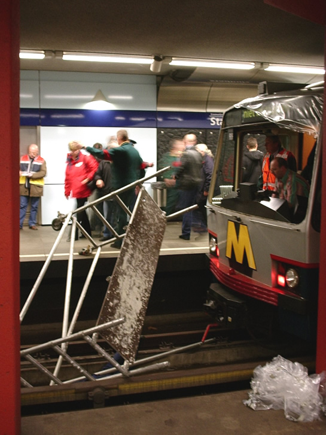
De metrorijtuigen worden ontruimd. De rolsteiger ligt nog in het spoor en passanten kijken geschrokken naar het stoffelijk overschot dat tussen het spoor ligt.
Direct na de aanrijding werd de hulp ingeroepen van politie, brandweer en ambulance. Nadat de spanning van de baan gehaald was startte de hulpverlening. Ook in het rijtuig waren tientallen gewonden gevallen. Deze werden door ambulancepersoneel in veiligheid gebracht en in de hal van het station of op straatniveau verder behandeld aan hun verwondingen. Elk rijtuig werd apart geëvacueerd. De evacuatie vond deels plaats in de tunnel, omdat de achterste rijtuigen nog niet in het station stonden.
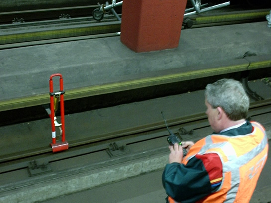
Voordat begonnen kan worden met de hulpverlening, moet de derde rail m.b.v. een kortsluitpoot om veiligheidsredenen kortgesloten worden.
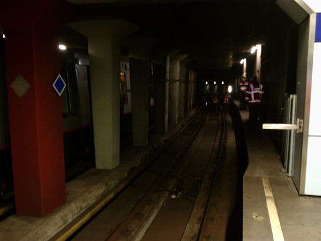
De evacuatie moest deels plaatsvinden in de tunnel, omdat een deel van de combinatie metrorijtuigen nog in de tunnel stond.
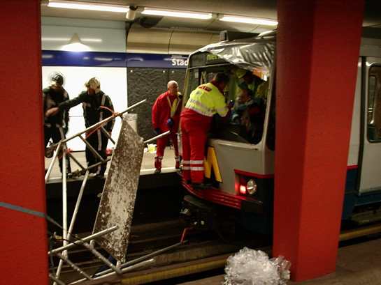
Een arts van de traumahelikopter assisteert bij het bevrijden van de metrobestuurder.
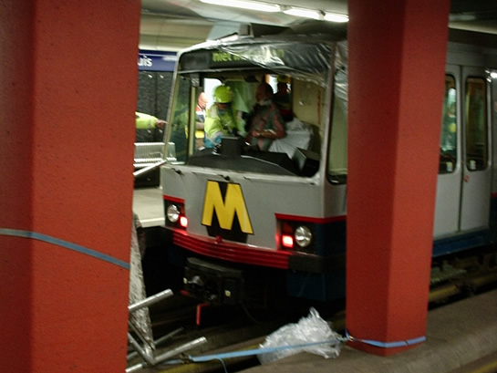
Als de metrobestuurder gestabiliseerd is, wordt hij met een brancard uit zijn cabine gehaald.
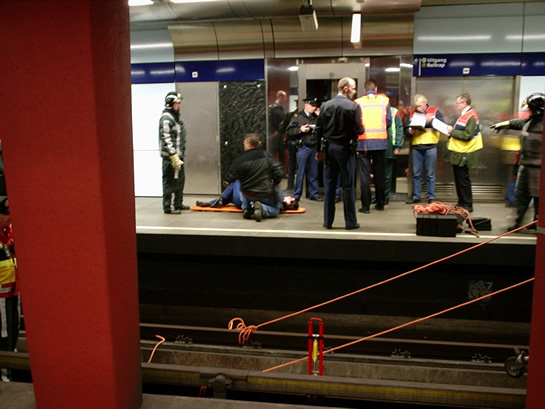
Gewonden worden, wanneer noodzakelijk, direct op het perron geholpen. Verdere behandeling geschiedt in de stationshal en op straatniveau, in veldhospitalen.
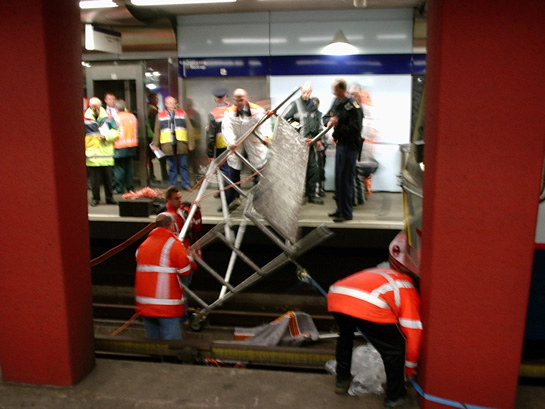
Nadat het stoffelijk overschot afgedekt is met een laken, wordt begonnen met het bergen van de rolsteiger.
Rond 14.45 uur werd het laatste rijtuig geëvacueerd. Enkele minuten later werd ook het stoffelijk overschot van de werknemer op de rolsteiger geborgen. Nadat de spanning weer op de baan stond en het beschadigde metrorijtuig weggesleept was, werd het metroverkeer rond 16.00 uur hervat.
Oefening
Gelukkig ging het bij de bovenstaande gebeurtenis om een calamiteitenoefening. Er zijn dus géén doden of gewonden gevallen. Een calamiteitenoefening is nodig om de hulpverlening en de coördinatie daarvan bij een dergelijk ongeval zo goed mogelijk te trainen. Overigens had deze oefening geen terroristisch oogmerk.
Rond 13.00 uur werd het metroverkeer tussen Centraal Station en Beurs stilgelegd. Metro's vanuit Spijkenisse en Slinge reden niet verder dan station Beurs en halteerden op spoor 2. Reizigers werd geadviseerd gebruik te maken van alternatief vervoer. Ook trams en bussen reden niet rondom de Coolsingel, deze werden omgeleid.
Speciaal voor deze oefening werden er drie metrorijtuigen (5227, 5228 en 5243 als wagendienst 99) Type T gebruikt. Deze werden omstreeks 12.45 uur vanaf remise 's-Gravenweg via de verbindingsboog naar station Leuvehaven gebracht. In de verbindingsboog werden de 5227 en de 5228 ontkoppeld van rijtuig 5243. Nadat rijtuigen 5227 en 5228 gekeerd waren in station Leuvehaven, reden ze richting station Stadhuis (spoor 2). Even later reed ook het ontkoppelde rijtuig 5243 vanuit de verbindingsboog naar station Leuvehaven, keerde daar en vervolgde eveneens zijn weg naar station Stadhuis spoor 2. Daar werd gekoppeld met de 5227 en de 5228.
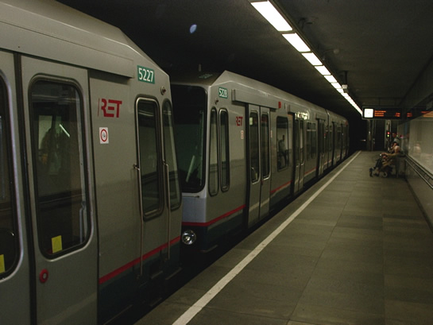
Eerst keerden de rijtuigen 5227 en 5228 in station Leuvehaven.
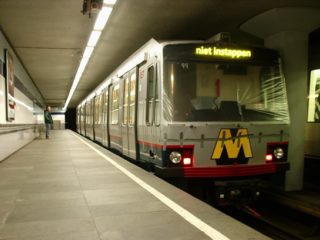
Daarna was dat het geval met enkel rijtuig 5243, hier nog afgedekt met plastic folie.
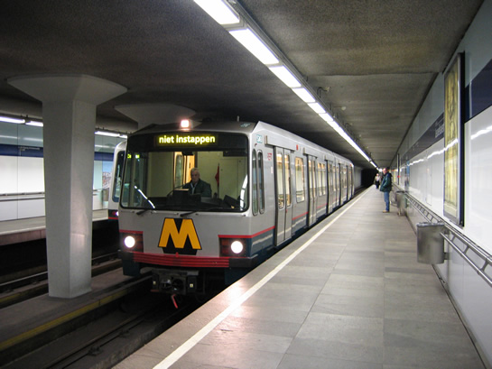
En nogmaals rijtuig 5243, ingeschakeld en gereed voor vertrek richting Stadhuis.
Om 13.35 uur begon de calamiteiten-oefening officieel. Binnen een kwartier waren politie, brandweer en ambulance ter plaatse. Zij snelden het station binnen om direct hulp te verlenen. Ook de pers was in grote getalen ter plaatse gekomen. Pers en genodigden konden op perron 1 meekijken met de oefening.
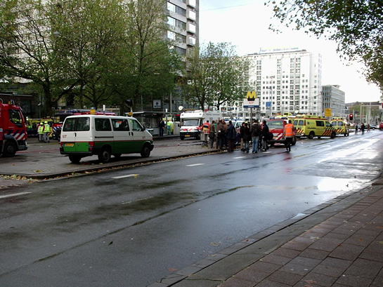
De Coolsingel was volgestroomd met ambulances, politiewagens en brandweerwagens.
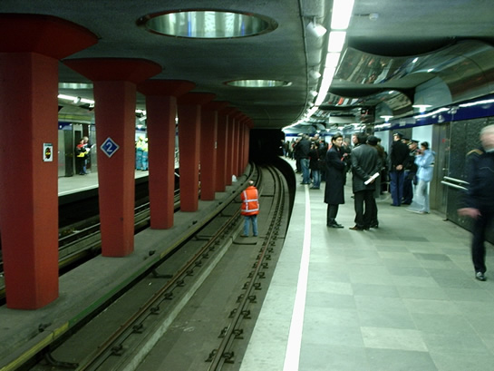
Op het perron van spoor 1 konden pers en genodigden de hulpoperatie nauwkeurig volgen.
Gedurende de oefening werd er gekeerd in station Beurs spoor 2, hiervoor werd van spoor gewisseld in wisselcomplex Leuvehaven. Door de grote passagiersaantallen duurde het daadwerkelijke "kopmaken" in het station lang. Controlebeambten (CBA's) begeleidden de passagiersstromen bij het in- en uitstappen. Er ontstonden vertragingen van maximaal 10 minuten.
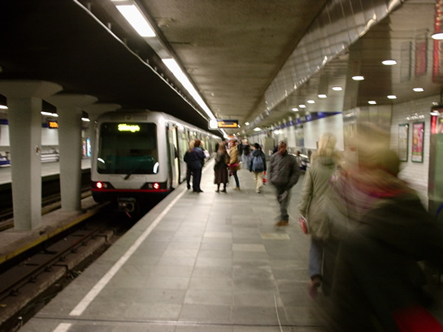
Wagendienst 905 keerde als eerste in de perronsectie van station Beurs spoor 2.
Tevens was er een zgn. "bufferrijtuig" neergezet in de tunnel ten noorden van station Beurs, spoor 1. Dit om te voorkomen dat een metrotrein op onvoorziene wijze terecht zou komen in station Stadhuis.
Rond 16.00 uur was de oefening voorbij en werd het metroverkeer hervat. De combinatie 5243-5228-5227 werd weer teruggebracht naar remise 's-Gravenweg, alwaar de voorruit weer in het rijtuig is gezet. De "buffertrein" werd zonder problemen opgestart en kon zijn dienst vervolgen op de Erasmuslijn. Uiteindelijk werden er 150 figuranten ingezet, waarvan er 30 gewond waren en uit de rijtuigen gehaald moesten worden.